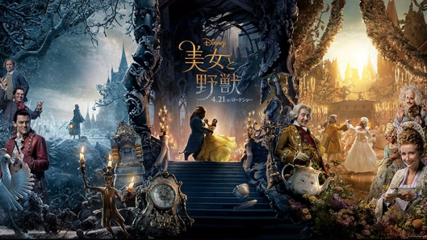

STORY
ひとりの美しい王子が、呪いによって醜い野獣の姿に変えられてしまう。
魔女が残した一輪のバラの花びらがすべて散る前に、誰かを心から愛し、愛されることができなけれ ば、永遠に人間には戻れない。
呪われた城の中で、希望を失いかけていた野獣と城の住人たちの孤独な日々に変化をもたらしたのは 、美しい村の娘ベル。
聡明で進歩的な考えを持つ彼女は、閉鎖的な村人たちになじめず、傷つくこともあった。
それでも、“人と違う”ことを受け入れ、かけがえのない自分を信じるベルと、“人と違う”外見に 縛られ、本当の自分の価値を見出せずにいる野獣──その出会いは、はたして奇跡を生む のだろうか…？
豪華なスタッフとキャスト
『ハリー・ポッター』シリーズのハーマイオニー役で世界を魅了した愛らしい少女は、いまや強い意 志を持った聡明で美しい大人の女性として、カリスマ的存在となっている。
そのエマが「４歳のころから夢中」と語るベルを演じるとき、ベルはおとぎの国の住人であることを やめ、現代を生きる私たちにエールを贈る21世紀最高のヒロインに生まれ変わる。
また、野獣にはダン・スティーヴンス、ガストンにルーク・エヴァンス、ルミエールにユアン・マク レガーなど、絢爛豪華な実力派スターが結集！
監督と脚本を務めたのは、大ヒットミュージカルを映画化した『シカゴ』（02／脚本）や『ドリーム ガールズ』（06／監督・脚本）などで知られるビル・コンドン。
華やかさと深みを増した音楽
そして、なんといってもディズニーの『美女と野獣』の魅力は、アカデミー賞／ゴールデングローブ 賞／グラミー賞を総なめにした極上のミュージカルナンバー。
アラン・メンケン（作曲）とハワード・アシュマン（作詞）によるアニメーション版からの楽曲に、 メンケンが新たにティム・ライス（作詞）と組んで作り上げた3曲の新曲が加わり、より華やかさと 深みを増した音楽が、世紀の映像体験を約束してくれる。